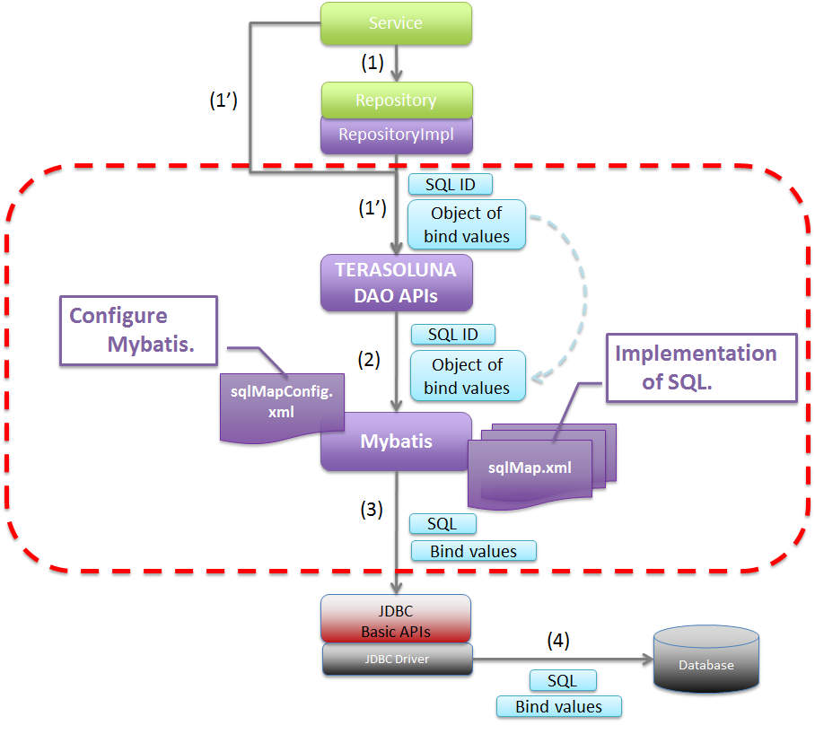

5.3. データベースアクセス（Mybatis2編）¶
5.3.1. Overview¶

Picture - Target of description¶
5.3.1.1. Mybatisについて¶
5.3.1.2. TERASOLUNA DAOについて¶
TERASOLUNA DAOは、O/R Mapperに依存する処理を隠蔽するためのDAOインタフェースと、Mybatis2.xを使用したDAO実装クラスを提供している。
TERASOLUNA DAOから提供されているDAOインタフェースは、以下の通りである。
TERASOLUNA DAOから提供されているDAOインタフェース¶ 項番
クラス名
説明
参照系SQLを実行するためのDAOインタフェース
更新系SQLを実行するためのDAOインタフェース
StoredProcedureを実行するためのDAOインタフェース
参照系SQLを実行して取得されるレコードに対して、一レコードずつ処理を行うためのDAOインタフェース。
TERASOLUNA DAO(Mybatis実装)を使って、データベースにアクセスする際の基本フローを、以下に示す。
 Picture - Basic flow of TERASOLUNA DAO¶
項番
説明
sqlMap.xml)から取得し、SQLとバインド値を、JDBCドライバに渡す。(実際の値のバインドは、java.sql.PreparedStatementのAPIが使われている)JDBCドライバは、渡されたSQLとバインド値を、データベースに送信することで、SQLを実行する。
{kind=link}
5.3.2. How to use¶
5.3.2.1. pom.xmlの設定¶
インフラストラクチャ層にMyBatis2(TERASOLUNA DAO)を使用する場合、以下のdependencyをpom.xmlに追加する。
<!-- (1) --> <dependency> <groupId>org.terasoluna.gfw</groupId> <artifactId>terasoluna-gfw-mybatis2</artifactId> </dependency>
項番
説明
terasoluna-gfw-mybatis2をdependencyに追加する。
5.3.2.2. アプリケーションの設定¶
5.3.2.2.1. データソースの設定¶
データソースに設定は、共通編のデータソースの設定を参照されたい。
5.3.2.2.2. PlatformTransactionManagerの設定¶
ローカルトランザクションを使用する場合、JDBCのAPIを呼び出してトランザクション制御を行う
org.springframework.jdbc.datasource.DataSourceTransactionManagerを使用する。
xxx-env.xml
<bean id="transactionManager" class="org.springframework.jdbc.datasource.DataSourceTransactionManager"> <!-- (1) --> <property name="dataSource" ref="dataSource" /> <!-- (2) --> </bean>
項番
説明
org.springframework.jdbc.datasource.DataSourceTransactionManagerを指定する。設定済みのデータソースのbeanを指定する。
アプリケーションサーバから提供されているトランザクションマネージャを使用する場合は、以下の通りに設定する。
アプリケーションサーバから提供されているトランザクションマネージャを使用する場合、JTAのAPIを呼び出してトランザクション制御を行う
org.springframework.transaction.jta.JtaTransactionManagerを使用する。
xxx-env.xml
<tx:jta-transaction-manager /> <!-- (1) -->
項番
説明
JtaTransactionManagerが、"transactionManager"というidで、bean定義される。
5.3.2.2.3. TERASOLUNA DAOの設定¶
Spring Frameworkから提供されているSqlMapClientのファクトリクラスと、TERASOLUNA DAOのbean定義を行う。
xxx-infra.xml
<bean id="sqlMapClient" class="org.springframework.orm.ibatis.SqlMapClientFactoryBean"> <!-- (1) --> <property name="configLocations" value="classpath*:/META-INF/mybatis/config/*sqlMapConfig.xml" /> <!-- (2) --> <property name="mappingLocations" value="classpath*:/META-INF/mybatis/sql/**/*-sqlmap.xml" /> <!-- (3) --> <property name="dataSource" ref="dataSource" /> <!-- (4) --> </bean> <bean id="queryDAO" class="jp.terasoluna.fw.dao.ibatis.QueryDAOiBatisImpl"> <!-- (5) --> <property name="sqlMapClient" ref="sqlMapClient" /> <!-- (6) --> </bean> <!-- (5) (6) --> <bean id="updateDAO" class="jp.terasoluna.fw.dao.ibatis.UpdateDAOiBatisImpl"> <property name="sqlMapClient" ref="sqlMapClient" /> </bean> <!-- (5) (6) --> <bean id="spDAO" class="jp.terasoluna.fw.dao.ibatis.StoredProcedureDAOiBatisImpl"> <property name="sqlMapClient" ref="sqlMapClient" /> </bean> <!-- (5) (6) --> <bean id="queryRowHandleDAO" class="jp.terasoluna.fw.dao.ibatis.QueryRowHandleDAOiBatisImpl"> <property name="sqlMapClient" ref="sqlMapClient" /> </bean>
項番
説明
SqlMapClientクラスのファクトリクラスとして、org.springframework.orm.ibatis.SqlMapClientFactoryBeanを指定する。/META-INF/mybatis/config/」ディレクトリに格納されている「sqlMapConfig.xml」で終わるファイルが、対象ファイルとなる。設定ファイルについては、Mybatisの設定を参照されたい。/META-INF/mybatis/sql/」ディレクトリ配下（サブディレクトリも含む）に格納されている「-sqlmap.xml」で終わるファイルが、対象ファイルとなる。SQLマッピングファイルについては、SQLマッピングの実装(基本編)を参照されたい。設定済みのデータソースのbeanを指定する。
TERASOLUNA DAOのMybatis実装クラスを指定して、bean定義する。
(1)で定義した
SqlMapClientクラスのファクトリクラスのbeanを指定する。
5.3.2.2.4. LOB型を扱う場合の設定¶
BLOBやCLOBなどのLarge Objectを扱う場合は、SqlMapClientクラスのファクトリクラスに、LobHandlerを指定する。
xxx-infra.xml
<!-- (1) --> <bean id="nativeJdbcExtractor" class="org.springframework.jdbc.support.nativejdbc.CommonsDbcpNativeJdbcExtractor" /> <!-- (2) --> <bean id="lobHandler" class="org.springframework.jdbc.support.lob.OracleLobHandler"> <property name="nativeJdbcExtractor" ref="nativeJdbcExtractor" /> <!-- (3) --> </bean> <bean id="sqlMapClient" class="org.springframework.orm.ibatis.SqlMapClientFactoryBean"> <property name="configLocations" value="classpath*:/META-INF/mybatis/config/*sqlMapConfig.xml" /> <property name="mappingLocations" value="classpath*:/META-INF/mybatis/sql/**/*-sqlmap.xml" /> <property name="dataSource" ref="dataSource" /> <property name="lobHandler" ref="lobHandler" /> <!-- (4) --> </bean>
項番
説明
org.springframework.jdbc.support.nativejdbc.NativeJdbcExtractorインタフェースの実装クラスを、bean定義する。例では、org.springframework.jdbc.support.nativejdbc.CommonsDbcpNativeJdbcExtractorを指定しているが、Tomcat以外のAPサーバでは、コネクションプールの実装によって、JDBCコネクションを取得できない場合がある。その場合、Springが提供している他のNativeJdbcExtractor(org.springframework.jdbc.support.nativejdbc.WebLogicNativeJdbcExtractorなど)を指定するか、各APサーバ用に、新たにNativeJdbcExtractorを作成する必要がある。org.springframework.jdbc.support.lob.LobHandlerインタフェースの実装クラスをbean定義する。例では、Oracle使用時に指定するorg.springframework.jdbc.support.lob.OracleLobHandlerを指定しているが、Oracle以外の場合は、org.springframework.jdbc.support.lob.DefaultLobHandlerを指定する。NativeJdbcExtractorのbeanを指定する。LobHandlerのbeanを指定する。
5.3.2.2.5. Mybatisの設定¶
SqlMapClientのデフォルトの動作をカスタマイズする。必要に応じてカスタマイズすること。
sqlMapConfig.xml
<?xml version="1.0" encoding="UTF-8" ?> <!DOCTYPE sqlMapConfig PUBLIC "-//ibatis.apache.org//DTD SQL Map Config 2.0//EN" "http://ibatis.apache.org/dtd/sql-map-config-2.dtd"> <!-- (1) --> <sqlMapConfig> <settings useStatementNamespaces="true" /> <!-- (2) --> </sqlMapConfig>
項番
説明
DTDファイルを指定する。指定することで、スキーマのチェックと、IDE上でのコード補完が有効となる。
useStatementNamespaces="true"を設定することで、SQLマッピングファイルで指定するネームスペースを、SQLIDとして使用するように設定している。
sqlMapConfigの子要素について
子要素として、properties,settings,resultObjectFactory,typeAlias,transactionManager,sqlMapが存在する。必要に応じて、設定を行うこと。詳細は、Mybatis Developer Guide(PDF)の「The SQL Map XML Configuration File」(P.8-16)を参照されたい。
sqlMapConfigの子要素¶ 項番
要素
説明
properties
"${プロパティ名}"の形式で参照することができる。環境に依存する値や、共通的な設定値を定義する際に使用する。詳細は、Mybatis Developer Guide(PDF)の「The SQL Map XML Configuration File」(P.9)を参照されたい。
settings
SqlMapClientのデフォルト動作のカスタマイズを行うための要素。設定項目の詳細については、Mybatis Developer Guide(PDF)の「The SQL Map XML Configuration File」(P.9-11)を参照されたい。
resultObjectFactory
java.lang.Class#newInstance()メソッドで生成されたインスタンスが使用される。詳細については、Mybatis Developer Guide(PDF)の「The SQL Map XML Configuration File」(P.11-12)を参照されたい。
typeAlias
transactionManager
トランザクション管理は、Spring Frameworkの機能を使うため、定義は不要である。
sqlMap
TERASOLUNA DAOの設定で設定済みのため、定義は不要である。
5.3.2.3. SQLマッピングの実装(基本編)¶
以下に、基本的なSQLマッピングの実装例を示す。
アプリケーション内で使用するSQLを実装する。
xxx-sqlmap.xml
<?xml version="1.0" encoding="UTF-8" ?> <!DOCTYPE sqlMap PUBLIC "-//ibatis.apache.org//DTD SQL Map 2.0//EN" "http://ibatis.apache.org/dtd/sql-map-2.dtd"> <!-- (1) --> <sqlMap namespace="xxx"> <!-- (2) --> <!-- (3) --> <select id="findOne"> <!-- ... --> </select> <!-- ... --> </sqlMap>
項番
説明
DTDファイルを指定する。指定することで、スキーマのチェックと、STS上でのコード補完が有効となる。
ネームスペースを指定する。
sqlMapConfig.xmlにて、ネームスペースをSQLIDとして使用するように設定しているので、このSQLを実行するために指定するSQLIDは「xxx.findOne」となる。
sqlMapの子要素について
子要素として、
cacheModel,typeAlias,parameterMap,resultMap,select,insert,update,delete,statement,sql,procedureが存在する。
sqlMapの子要素¶ 項番
要素
説明
typeAlias
sqlMapConfig.xmlのtypeAliasと同じ。
cacheModel
オブジェクトのキャッシュの定義を行う要素
parameterMap
SQLにバインドするパラメータ（オブジェクト）のマッピングに関する定義を行う要素
resultMap
SQLの実行結果として返却されるレコードとオブジェクトのマッピングに関する定義を行う要素
select
SELECT文を記載する要素
insert
INSERT文を記載する要素
update
UPDATE文を記載する要素
delete
DELETE文を記載する要素
statement
select,insert,update,delete,procedure要素を包含している汎用要素。個別の要素(select,insert,update,delete,procedure)を使用することを推奨する。
sql
select,insert,update,delete,statementからインクルードするためのSQL文（SQL文の一部）を記載する要素。この要素をうまく使うことで、複数のSQLで重複している部分を、共通化することができる。
procedure
PROCEDURE呼び出しを記載する要素
Note
詳細は、Mybatis Developer Guide(PDF)の、以下の章を参照されたい。
Warning
statement,select,procedure要素を使用して、大量データを返すようなクエリを記述する場合には、fetchSize属性に適切な値を設定しておくこと。 fetchSize属性は、JDBCドライバとデータベース間の通信において、一度の通信で取得するデータの件数を設定するパラメータである。 fetchSize属性を省略した場合は、各JDBCドライバのデフォルト値が利用されるため、デフォルト値が全件取得するJDBCドライバの場合、メモリの枯渇の原因になる可能性があるので、注意が必要となる。
5.3.2.3.1. select要素の実装例¶
select要素を実装する前に、検索したレコードのカラムと、JavaBeanのプロパティのマッピング定義を行う。
xxx-sqlmap.xml
<resultMap id="resultMap_Todo" class="xxxxxx.yyyyyy.zzzzzz.domain.model.Todo"> <!-- (1) --> <result property="todoId" column="todo_id" /> <!-- (2) --> <result property="todoTitle" column="todo_title" /> <result property="finished" column="finished" /> <result property="createdAt" column="created_at" /> <result property="version" column="version" /> </resultMap>
項番
属性
説明
検索したレコードとJavaBeanのマッピングを行う。詳細は、Developer Guideを参照されたい。
マッピングを識別するためのIDを指定する。select属性から参照される。
マッピングするJavaBeanのFQCNを指定する。
JavaBeanのプロパティと、検索したレコードのカラムのマッピングを行う。
JavaBeanのプロパティ名を指定する。
property属性で指定したプロパティに、マッピングするレコードのカラム名を指定する。
select要素を実装する。
xxx-sqlmap.xml
<select id="findOne" parameterClass="java.lang.String" resultMap="resultMap_Todo"> <!-- (3) --> SELECT * FROM todo WHERE todo_id = #todoId# /* (4) */ </select>
項番
属性
説明
検索用SQLを実装する。
検索SQLを識別するためのIDを指定する。
java.lang.Stringを指定しているが、複数のパラメータ(検索条件)を渡したい場合は、JavaBeanを指定することもできる。"SELECT todo_title AS todoTitle, ..."とすると、JavaBeanのtodoTitleプロパティに、値が設定される。java.lang.String）を使用しているので、バインド変数名は任意の名前を指定することができる。バインド用オブジェクトにJavaBeanを使用する場合は、バインド用の変数名は、JavaBeanのプロパティ名と一致させる必要がある。Note
自動マッピングについて
resultMap属性を使わずに、resultClass属性で指定したJavaBeanのプロパティに、自動的にマッピングすることもできるが、取得レコードのカラム名と、JavaBeanのプロパティ名が一致している必要がある。 取得レコードのカラム名と、JavaBeanのプロパティ名を一致させる方法として、AS句を使って、カラム名に別名を付与する方法がある。下記に、自動マッピングを使用した場合の実装例を示す。
<select id="findOne" parameterClass="java.lang.String" resultClass="xxxxxx.yyyyyy.zzzzzz.domain.model.Todo"> SELECT todo_id AS todoId, todo_title AS todoTitle, finished, created_at AS createdAt, version FROM todo WHERE todo_id = #todoId# </select>自動マッピングは、取得したレコードとJavaBeanをマッピングする手段としては、もっとも簡単な方法である。ただし、自動マッピングを使用した場合は、以下の制約や注意点があることを考慮し、使用すること。
SQLで取得した値の型宣言や、変換定義などが行えない。
複雑なマッピング（例えば、ネストされているJavaBeanへのマッピング）が行えない。
マッピングする際に、
java.sql.ResultSetMetaDataにアクセスするため、若干のパフォーマンス劣化が発生する。
5.3.2.3.2. insert要素の実装例¶
insert要素を実装する。
xxx-sqlmap.xml
<insert id="insert" parameterClass="xxxxxx.yyyyyy.zzzzzz.domain.model.Todo"> <!-- (1) --> INSERT INTO todo ( todo_id ,todo_title ,finished ,created_at ,version ) values( #todoId# /* (2) */ ,#todoTitle# ,#finished# ,#createdAt# ,1 ) </insert>
項番
属性
説明
挿入用SQLを実装する。
挿入用SQLを識別するためのIDを指定する。
バインド用オブジェクトの型を指定する。JavaBeanを指定することもできる。
SQLにバインド値を指定する。バインド用オブジェクトにJavaBeanを使用する場合は、バインド用の変数名は、JavaBeanのプロパティ名と一致させる必要がある。
Note
parameterMap属性や、”Inline Parameter Maps”の仕組みを使用することで、SQLにバインドする値の型の宣言や、変換定義を行うことができる。 例えば、バインド値が
nullの場合に、デフォルト値を設定することができる。詳細は、Mybatis Developer Guide(PDF)の「Parameter Maps and Inline Parameters」(P.27-31)を参照されたい。
5.3.2.3.3. update要素の実装例¶
update要素を実装する。
xxx-sqlmap.xml
<update id="update" parameterClass="xxxxxx.yyyyyy.zzzzzz.domain.model.Todo"> <!-- (1) --> UPDATE todo SET todo_id = #todoId# ,todo_title = #todoTitle# ,finished = #finished# ,version = (#version# + 1) WHERE todo_id = #todoId# AND version = #version# </update>
項番
説明
更新用SQLを実装する。
5.3.2.3.4. delete要素の実装例¶
delete要素を実装する。
xxx-sqlmap.xml
<delete id="delete" parameterClass="java.lang.String"> <!-- (1) --> DELETE FROM todo WHERE todo_id = #todoId# </delete>
項番
説明
削除用SQLを実装する。
5.3.2.3.5. procedure要素の実装例¶
以下は、PostgreSQLに作成したファンクションを、procedure要素を使って呼び出す例となっている。
テーブルと、ファンクション(PL/pgSQL実装)を作成するSQLは、以下の通りである。
CREATE TABLE sales ( itemno INT4 PRIMARY KEY, quantity INT4 NOT NULL, price INT4 NOT NULL );CREATE FUNCTION sales_item(p_itemno INT4) RETURNS TABLE ( quantity INT4 ,total INT4 ) AS $$ BEGIN RETURN QUERY SELECT s.quantity ,s.quantity * s.price FROM sales s WHERE itemno = p_itemno; END; $$ LANGUAGE plpgsql;
parameterMap要素を実装する。
<!-- (1) --> <parameterMap id="salesItemMap" class="xxxxxx.yyyyyy.zzzzzz.domain.model.SalesItem"> <!-- (2) --> <parameter property="id" jdbcType="INTEGER" mode="IN" /> <!-- (3) --> <parameter property="quantity" jdbcType="INTEGER" mode="OUT" /> <parameter property="total" jdbcType="INTEGER" mode="OUT" /> </parameterMap>// (4) public class SalesItem implements Serializable { private Integer id; private Integer quantity; private Integer total; // ... }
項番
説明
ファンクションに渡すINパラメータと、OUTパラメータのマッピングを定義する。
INパラメータのマッピングを定義している。INパラメータに、
SalesItem#idをマッピングしている。OUTパラメータのマッピングを定義している。OUTパラメータの1番目を
SalesItem#quantityに、2番目をSalesItem#totalにマッピングしている。マッピング対象となるJavaBean。
Note
parameterMap属性を使わずに、”Inline Parameter Maps”の仕組みでマッピングする事もできる。 具体例は、Mybatis Developer Guide(PDF)の「Parameter Maps and Inline Parameters」(P.31)を参照されたい。
procedure要素を実装する。
<procedure id="findSalesItem" parameterMap="salesItemMap"> <!-- (1) --> {call sales_item(?,?,?)} </procedure>
項番
説明
sales_itemというFunctionに対して、INパラメータ1つと、OUTパラメータ2つを指定している。バインドされる値は、parameterMap要素で指定したマッピング定義の定義順となる。
5.3.2.3.6. sql要素の実装例¶
sql要素の実装する。
xxx-sqlmap.xml
<sql id="fragment_where_byFinished"> <!-- (1) --> WHERE finished = #finished# </sql> <select id="findByFinished" parameterClass="boolean" resultMap="resultMap_Todo"> <!-- (2) --> SELECT * FROM todo <include refid="fragment_where_byFinished" /> <!-- (3) --> ORDER BY created_at DESC </select> <select id="countByFinished" parameterClass="boolean" resultClass="long"> <!-- (4) --> SELECT count(*) FROM todo <include refid="fragment_where_byFinished" /> <!-- (5) --> </select>
項番
説明
(2)と(4)のSQLで共有するWHERE句を定義している。includeされるSQLの定義は、includeする側のSQLより先に、定義する必要がある。
条件に一致するデータを取得するためのSQL
(1)で定義したWHERE句が実装されているSQLを、includeする。
条件に一致するデータ件数を取得するためのSQL
(1)で定義したWHERE句が実装されているSQLを、includeする。
5.3.2.3.7. LOB型更新の実装例¶
DDL
CREATE TABLE upload_binary ( file_id CHAR(36) NOT NULL, file_name VARCHAR(256) NOT NULL, content BLOB NOT NULL, -- (1) CONSTRAINT pk_upload_binary PRIMARY KEY (file_id) );
項番
説明
DTO(JavaBean)
public class BinaryFile implements Serializable { // omitted private String fileId; private String fileName; private InputStream content; // (2) // omitted setter/getter }
項番
説明
java.io.InputStream型で定義する。上記例では、InputStreamに、アップロードされたファイルの入力ストリームが設定される。Warning
BLOBを扱う プロパティの型は、原則
InputStream型で定義することを推奨する。 BLOBはバイト配列として扱うこともできるが、データの容量が大きくなると、メモリ枯渇の原因となる可能性がある。CLOBを扱うプロパティの型は、 原則
java.io.Reader型で定義することを推奨する。 CLOBは文字列として扱うこともできるが、データの容量が大きくなると、メモリ枯渇の原因となる可能性がある。
xxx-sqlmap.xml
<parameterMap id="uploadBinaryParameterMap" class="xxxxxx.yyyyyy.zzzzzz.domain.service.BinaryFile"> <parameter property="fileId" /> <parameter property="fileName" /> <!-- (3) --> <parameter property="content" jdbcType="BLOB" typeHandler="jp.terasoluna.fw.orm.ibatis.support.BlobInputStreamTypeHandler" /> </parameterMap> <!-- (4) --> <insert id="uploadBinary" parameterMap="uploadBinaryParameterMap"> INSERT INTO upload_binary ( file_id ,file_name ,content ) VALUES ( ? ,? ,? ) </insert>
項番
説明
"BLOB"を、typeHandler属性には"jp.terasoluna.fw.orm.ibatis.support.BlobInputStreamTypeHandler"を指定する。Note
CLOBを扱う場合は、jdbcType属性には
"CLOB"を、typeHandler属性には"jp.terasoluna.fw.orm.ibatis.support.ClobReaderTypeHandler"を指定する。Tip
FQCNで指定しているクラス名は、 typeAlias要素を使って別名を付与することで、シンプルに記載することができる。
<!-- (5) --> <typeAlias alias="BinaryFile" type="xxxxxx.yyyyyy.zzzzzz.domain.service.BinaryFile"/> <typeAlias alias="BlobInputStreamTypeHandler" type="jp.terasoluna.fw.orm.ibatis.support.BlobInputStreamTypeHandler"/> <parameterMap id="uploadBinaryParameterMap" class="BinaryFile"> <!-- (6) --> <!-- omitted --> <parameter property="content" jdbcType="BLOB" typeHandler="BlobInputStreamTypeHandler" /> <!-- (6) --> </parameterMap>
項番
説明
BinaryFileとBlobInputStreamTypeHandlerクラスに対して、別名を付与している。typeAlias要素は、sqlMapConfig.xmlとxxx-sqlmap.xmlの両方で、定義することができる。
Service
// omitted @Inject UpdateDAO updateDAO; // omitted public BinaryFile uploadBinaryFile(String fileName, InputStream contentInputStream) { // (7) BinaryFile inputFile = new BinaryFile(); inputFile.setFileId(UUID.randomUUID().toString()); inputFile.setFileName(fileName); inputFile.setContent(contentInputStream); // (8) updateDAO.execute("example.uploadBinary", inputFile); return inputFile; } // omitted
項番
説明
InputStreamオブジェクトを、DTOに設定している。UpdateDAOを呼び出す。DAOの呼び出し方法は、BLOBを扱わない場合と同じである。
Controller
@RequestMapping("uploadBinary") public String uploadBinaryFile( @RequestPart("file") MultipartFile multipartFile, Model model) throws IOException { // (9) BinaryFile uploadedFile = uploadService.uploadBinaryFile(multipartFile .getOriginalFilename(), multipartFile.getInputStream()); model.addAttribute(uploadedFile); return "upload/form"; }
項番
説明
InputStreamを引数に、Serviceのメソッドを呼び出す。
5.3.2.3.8. LOB型取得の実装例¶
xxx-sqlmap.xml
<resultMap id="selectBinaryResultMap" class="BinaryFile"> <result property="fileId" column="file_id" /> <result property="fileName" column="file_name" /> <!-- (1) --> <result property="content" column="content" jdbcType="BLOB" typeHandler="BlobInputStreamTypeHandler" /> </resultMap> <!-- (2) --> <select id="selectBinary" parameterClass="java.lang.String" resultMap="selectBinaryResultMap"> SELECT * FROM upload_binary WHERE file_id = #fileId# </select>
項番
説明
"BLOB"を、typeHandler属性には"jp.terasoluna.fw.orm.ibatis.support.BlobInputStreamTypeHandler"を指定する。Note
CLOBを扱う場合は、jdbcType属性には
"CLOB"を、typeHandler属性には"jp.terasoluna.fw.orm.ibatis.support.ClobReaderTypeHandler"を指定する。
Service / Repository
// omitted @Inject QueryDAO queryDAO; // omitted public BinaryFile getBinaryFile(String fileId) { // (3) BinaryFile loadedFile = queryDAO.executeForObject( "article.selectBinary", fileId, BinaryFile.class); return loadedFile; } // omitted
項番
説明
QueryDAOを呼び出す。上記例では、ファイルIDに一致するアップロードファイルの情報を取得している。DAOの呼び出し方法は、BLOBを扱わない場合と同じである。
5.3.2.4. SQLマッピングの実装例(動的SQL編)¶
5.3.2.4.1. パラメータオブジェクトの指定有無を判定¶
SQLに渡されたパラメータオブジェクトが指定されているかを判定し、SQLを組み立てることができる。
判定用の要素は、以下の通りである。
項番
要素
説明
isParameterPresent
パラメータオブジェクトが指定されている(NULLでない)時のSQLを組み立てるための要素。
isNotParameterPresent
パラメータオブジェクトが指定されていない(NULLである)時のSQLを組み立てるための要素。
実装例は、以下の通りである。
<select id="findOne" parameterClass="java.lang.Integer" resultMap="..."> SELECT * FROM t_order WHERE <isParameterPresent> <!-- (1) --> id = #id# </isParameterPresent> <isNotParameterPresent> <!-- (2) --> 1 = 2 </isNotParameterPresent> <!-- ... --> </select>
項番
説明
1=2」を設定している。
上記の動的SQLで生成されるSQLは、以下2パターンとなる。
-- (1) parameterObject(id)=1 SELECT * FROM t_order WHERE id = 1 -- (2) SELECT * FROM t_order WHERE 1 = 2
5.3.2.4.2. パラメータオブジェクト(JavaBean)のプロパティの存在有無を判定¶
SQLに渡されたパラメータオブジェクト(JavaBean)に指定したプロパティが存在するか判定し、SQLを組み立てることができる。
判定用の要素は、以下の通りである。
項番
要素
説明
isPropertyAvailable
指定したプロパティが、存在する時のSQLを組み立てるための要素。
isNotPropertyAvailable
指定したプロパティが、存在しない時のSQLを組み立てるための要素。
実装例は、以下の通りである。
<select id="findOne" parameterClass="OrderCriteria" resultMap="..."> SELECT * FROM t_order WHERE <isPropertyAvailable property="statusCode"> <!-- (1) --> status_code = #statusCode# </isPropertyAvailable> <isNotPropertyAvailable property="statusCode"> <!-- (2) --> <![CDATA[ status_code <> 'completed' ]]> </isNotPropertyAvailable> <!-- ... --> </select>
項番
説明
statusCodeプロパティが存在する場合に、status_codeカラムが、statusCodeと一致するレコードが取得されるように、WHERE句を設定している。statusCodeプロパティが存在しない場合に、status_codeカラムが、'completed'以外のレコードが取得されるように、WHERE句を設定している。
上記の動的SQLで生成されるSQLは、以下2パターンとなる。
-- (1) statusCode='checking' SELECT * FROM t_order WHERE status_code = 'checking' -- (2) SELECT * FROM t_order WHERE status_code <> 'completed'
5.3.2.4.3. パラメータオブジェクト(JavaBean)のプロパティ値の設定有無を判定¶
SQLに渡されたパラメータオブジェクト(JavaBean)のプロパティに値が指定されているか判定し、SQLを組み立てることができる。
判定用の要素は、以下の通りである。
項番
要素
説明
isNull
プロパティの値が、
null時のSQLを組み立てるための要素。
isNotNull
プロパティの値が、
nullでない時のSQLを組み立てるための要素。
isEmpty
プロパティの値が、
nullまたは、空の時のSQLを組み立てるための要素。Collectionおよび、Stringに対して、指定することができる。
isNotEmpty
プロパティの値が、
nullおよび、空でない時のSQLを組み立てるための要素。Collectionおよび、Stringに対して、指定することができる。
実装例は、以下の通りである。
<select id="findOne" parameterClass="OrderCriteria" resultMap=""> SELECT * FROM t_order WHERE <isNull property="orderedDate"> <!-- (1) --> <![CDATA[ CURRENT_DATE - '1 months'::interval <= ordered_date ]]> </isNull> <isNotNull property="orderedDate"> <!-- (2) --> ordered_date = #orderedDate# </isNotNull> <isEmpty property="statusCodes" prepend="AND"> <!-- (3) --> <![CDATA[ status_code <> 'completed' ]]> </isEmpty> <isNotEmpty property="statusCodes" prepend="AND"> <!-- (4) --> status_code IN <iterate property="statusCodes" open="(" close=")" conjunction=","> #statusCodes[]# </iterate> </isNotEmpty> </select>
項番
説明
orderedDateプロパティ(Date型)の値がnullの場合に、ordered_dateカラムが、1ヶ月前以降のレコードが取得されるように、WHERE句を設定している。orderedDateプロパティ(Date型) の値がnullでない場合に、ordered_dateカラムがorderedDateと一致するレコードが取得されるように、WHERE句を設定している。statusCodesプロパティ(List<String>型)の値が、空の場合に、status_codeカラムが、'completed'以外のレコードが取得されるように、WHERE句を設定している。statusCodesプロパティ(List<String>型)の値が、空でない場合に、status_codeカラムが、statusCodesに格納されているいずれかの値と一致するレコードが取得されるように、WHERE句を設定している。iterate要素の説明は、後述する。
上記の動的SQLで生成されるSQLは、以下4パターンとなる。
-- (1) orderedDate=null, statusCodes=[] SELECT * FROM t_order WHERE CURRENT_DATE - '1 months'::interval <= ordered_date AND status_code <> 'completed' -- (2) orderedDate=null, statusCodes=['accepted','checking'] SELECT * FROM t_order WHERE CURRENT_DATE - '1 months'::interval <= ordered_date AND status_code IN ('accepted','checking') -- (3) orderedDate=2013/12/31, statusCodes=null SELECT * FROM t_order WHERE ordered_date = '2013/12/31' AND status_code <> 'completed' -- (4) orderedDate=2013/12/31, statusCodes=['accepted'] SELECT * FROM t_order WHERE ordered_date = '2013/12/31' AND status_code IN ('accepted')
5.3.2.4.4. パラメータオブジェクト(JavaBean)のプロパティ値を判定¶
SQLに渡されたパラメータオブジェクト(JavaBean)のプロパティに指定されている値を判定し、SQLを組み立てることができる。
判定用の要素は、以下の通りである。
項番
要素
説明
isEqual
プロパティの値が、指定した値と一致する時のSQLを組み立てるための要素。
isNotEqual
プロパティの値が、指定した値と一致しない時のSQLを組み立てるための要素。
isGreaterThan
プロパティの値が、指定した値より大きい時のSQLを組み立てるための要素。
isGreaterEqual
プロパティの値が、指定した値以上の時のSQLを組み立てるための要素。
isLessThan
プロパティの値が、指定した値より小さい時のSQLを組み立てるための要素。
isLessEqual
プロパティの値が、指定した値以下の時のSQLを組み立てるための要素。
実装例は、以下の通りである。
<select id="findOne" parameterClass="OrderCriteria" resultMap="..."> SELECT * FROM t_order WHERE ( <![CDATA[ status_code <> 'completed' ]]> <isEqual property="containCompletedOrder" compareValue="true" prepend="OR"> <!-- (1) --> status_code = 'completed' </isNull> ) </select>
項番
説明
containCompletedOrderプロパティ(Boolean型)の値が、trueの場合に、status_codeカラムが'completed'のレコードも取得されるように、WHERE句を設定している。Note
compareProperty属性を使用することで、JavaBean内の別のプロパティの値と、比較することもできる。
上記の動的SQLで生成されるSQLは、以下2パターンとなる。
-- (1) containCompletedOrder=false SELECT * FROM t_order WHERE (status_code <> 'completed') -- (2) containCompletedOrder=true SELECT * FROM t_order WHERE (status_code <> 'completed' OR status_code = 'completed')
5.3.2.4.5. 判定要素の共通属性¶
動的SQLを組み立てるための要素には、以下の共通的な属性が存在する。
項番
属性
説明
prepend
動的SQLを組み立てるための判定要素で、
trueと判断され、SQLが組み立てられた際に、SQLの先頭に設定する文字列を指定する。
open
動的SQLを組み立てるための判定要素の中で、組み立てたSQLの前に追加する文字列を指定する。
close
動的SQLを組み立てるための判定要素の中で、組み立てたSQLの後に付与する文字列を指定する。
実装例は、以下の通りである。
<select id="findOne" parameterClass="OrderCriteria" resultMap="..."> SELECT * FROM t_order <isNotEmpty property="statusCode" prepend="WHERE" open="(" close=")"> <!-- (1) --> status_code = #statusCode# <isEqual property="containCompletedOrder" compareValue="true" prepend="OR"> status_code = 'completed' </isEqual> </isNotEmpty> </select>
項番
属性
説明
statusCodeプロパティに値が指定されている場合に、status_codeカラムをWHERE句にし、containCompletedOrderプロパティ(Boolean型)の値がtrueの場合は、status_codeカラムが'completed'のレコードも取得されるように、WHERE句を設定している。statusCodeプロパティに値が指定されている場合に、SQLに"WHERE"を設定している。containCompletedOrderプロパティ(Boolean型)の値が、trueの場合は、OR条件を加えるため、status_codeカラムに対する条件をグループ化するための開始文^"("を指定している。")"を指定している。
上記の動的SQLで生成されるSQLは、以下3パターンとなる。
-- (1) statusCode=null, containCompletedOrder=false SELECT * FROM t_order -- (2) statusCode='accepted', containCompletedOrder=false SELECT * FROM t_order WHERE (status_code = 'accepted') -- (3) statusCode='checking', containCompletedOrder=true SELECT * FROM t_order WHERE (status_code = 'checking' OR status_code = 'completed')
5.3.2.4.6. コレクションの繰り返し¶
SQLに渡されたバインド値が、コレクションや配列の場合、コレクションおよび配列の要素分処理を繰り返して、SQLを組み立てることができる。
要素は、以下の通りである。
項番
要素
説明
iterate
コレクションおよび配列に対して、繰り返し処理を行い、SQLを組み立てるための要素。
実装例は、以下の通りである。
<select id="findOne" parameterClass="OrderCriteria" resultMap="..."> SELECT * FROM t_order <isNotNull property="statusCodes" prepend="WHERE"> <iterate property="statusCodes" prepend="status_code IN" open="(" conjunction="," close=")" > <!-- (1) --> #statusCodes[]# </iterate> </isNotNull> </select>
項番
属性
説明
statusCodesプロパティ(List<String>)に格納されている値を、IN句の値として設定している。"("を指定している。","を指定している。")"を指定している。Note
上記例は、JavaBeanの中のプロパティがコレクションの場合の実装例であるが、パラメータオブジェクト自体をコレクションにすることもできる。 その場合は、property属性は指定せず、
#[]#という形式でアクセスすることができる。コレクションには、JavaBeanを格納することもでき、JavaBeanにネストされているコレクションにも、アクセスすることができる。 詳細は、Developer Guide(PDF)の「Dynamic Mapped Statements」(P.52)を参照されたい。
上記の動的SQLで生成されるSQLは、以下3パターンとなる。
-- (1) statusCodes=null SELECT * FROM t_order -- (2) statusCodes=[] SELECT * FROM t_order -- (3) statusCodes=['accepted','checking'] SELECT * FROM t_order WHERE status_code IN ('accepted' , 'checking')
5.3.2.4.7. 動的SQLのブロック化¶
個々の動的SQLをブロック化することで、ブロック全体として、prepend, open, close属性を制御することができる。
要素は、以下の通りである。
項番
要素
説明
dynamic
動的SQLを組み立てる要素をブロック化するための要素。
実装例は、以下の通りである。
<select id="findOne" parameterClass="OrderCriteria" resultMap="..."> SELECT * FROM t_order WHERE <dynamic prepend="WHERE" open="(" close=")"> <!-- (1) --> <isNotEmpty property="id" prepend="AND"> <!-- (2) --> id = #id# </isNotEmpty> <isNotEmpty property="statusCode" prepend="AND"> <!-- (3) --> status_code = #statusCode# </isNotEmpty> </dynamic> </select>
項番
属性
説明
idプロパティに値を指定した場合、(2)のprepend属性の値は、"AND"ではなく、"WHERE"となる。
上記の動的SQLで生成されるSQLは、以下4パターンとなる。
-- (1) id=null, statusCode=null SELECT * FROM t_order -- (2) id=1, statusCode=null SELECT * FROM t_order WHERE (id = 1) -- (3) id=null, statusCode='accepted' SELECT * FROM t_order WHERE (status_code = 'accepted') -- (4) id=1, statusCode='accepted' SELECT * FROM t_order WHERE (id = 1 AND status_code = 'accepted')
5.3.2.5. QueryDAOの使用例¶
5.3.2.5.1. 1件検索¶
検索結果が、0～1件となるクエリを発行したい場合、以下のような実装となる。
Xxx.java
String todoId = "xxxxx...."; Todo loadedTodo = queryDAO.executeForObject( // (1) "todo.findOne", // (2) todoId, // (3) Todo.class); // (4) if (loadedTodo == null) { // (5) // ... // (6) }
項番
説明
検索結果を(4)で指定した型のオブジェクトとして取得するためのメソッド(
QueryDAO#executeForObject)を呼び出す。java.sql.SQLExceptionを発生させる。java.lang.Stringにしているが、複数のパラメータ(検索条件)を渡したい場合は、JavaBeanを指定することもできる。SQLの取得結果をマッピングするオブジェクトの型を指定する。
検索結果が0件の場合は、nullになるので、null判定が必要である。
検索結果が、0件の場合の処理を実装する。
5.3.2.5.2. 複数件検索¶
検索結果が、0～N件となるクエリを発行し、条件に一致するデータをすべて取得する場合は、以下のような実装となる。
Xxx.java
boolean finished = false; List<Todo> unfinishedTodoList = queryDAO.executeForObjectList( // (1) "todo.findByFinished", // (2) finished); // (3) if(unfinishedTodoList.isEmpty()){ // (4) // ... // (5) }
項番
説明
オブジェクトのリストを取得するための、メソッドを呼び出す。
検索結果が、0～N件となるSQLのSQLIDを指定する。
検索結果が0件の場合は、空のリストが返却される。nullは返却されないので、nullチェックは不要である。
検索結果が、0件の場合の処理を実装する。
5.3.2.5.3. ページネーション検索（TERASOLUNA DAO標準機能方式）¶
Warning
検索条件に一致するデータ件数が非常に多くなる場合の注意点
TERASOLUNA DAO標準機能のページネーション検索は、
java.sql.ResultSet#nextを使って取得するレコードの開始位置までスキップする実装となっているため、 検索条件に一致するデータ件数が、非常に多い場合、処理性能に影響を与える可能性がある。 検索条件に一致するデータ件数が、非常に多くなる可能性がある場合は、TERASOLUNA DAO標準機能のページネーション検索ではなく、SQL絞り込み方式の採用を検討すること。
Xxx.java
Pageable pageable = new PageRequest(0, 10); // (1) boolean finished = false; long totalCount = queryDAO.executeForObject( "todo.countByFinished", // (2) finished, Long.class); // (3) List<Todo> unfinishedTodoList = null; if(0 < totalCount) { unfinishedTodoList = queryDAO.executeForObjectList( "todo.findByFinished", // (4) finished, pageable.getOffset(), // (5) pageable.getPageSize()); // (6) } else { unfinishedTodoList = new ArrayList<Todo>(); } Page<Todo> page = new PageImpl<Todo>( // (7) unfinishedTodoList, // (8) pageable, // (9) totalCount); // (10)
xxx-sqlmap.xml
<select id="findByFinished" parameterClass="boolean" resultMap="resultMap_Todo"> <!-- (11) --> SELECT * FROM todo WHERE finished = #finished# ORDER BY created_at DESC </select>
項番
説明
Spring Dataより提供されているページング検索用のオブジェクト（
org.springframework.data.domain.PageRequest）を生成する。 Pageableオブジェクトは、リクエストパラメータに指定して、Controllerの引数として受け事もできる。詳細は、ページネーションを参照されたい。条件に一致するデータの合計件数を、取得するためのSQLの、SQLIDを指定して実行する。
件数の取得なので、Long.classを指定する。
検索結果が、0～N件となるSQLの、SQLIDを指定して実行する。
Spring Dataより提供されているページ用のオブジェクト（
org.springframework.data.domain.PageImpl）を生成する。ページネーション検索して、取得したリストを指定する。
ページネーション検索で使用したページング検索用のオブジェクト(Pageable)を指定する。
条件に一致するデータの、合計件数を指定する。
SQLの実装例。SQLとしては、取得位置を意識する必要はない。
5.3.2.5.4. ページネーション検索（SQL絞り込み方式）¶
PageableBindParams.java (サンプルクラス)
public class PageableBindParams<P> implements Serializable { // (1) private static final long serialVersionUID = 1L; private final P bindParams; private final Pageable pageable; public PageableBindParams(P bindParams, Pageable pageable) { this.bindParams = bindParams; this.pageable = pageable; } public P getBindParams() { return bindParams; } public Pageable getPageable() { return pageable; } }
Xxx.java
Pageable pageable = new PageRequest(0, 10); boolean finished = false; long totalCount = queryDAO.executeForObject( "todo.countByFinished", finished, Long.class); // (2) List<Todo> unfinishedTodoList = null; if(0 < totalCount) { PageableBindParams<Boolean> pageableBindParams = new PageableBindParams<Boolean>( // (3) finished, // (4) pageable); // (5) unfinishedTodoList = queryDAO.executeForObjectList( "todo.findPageByFinished", // (6) pageableBindParams); // (7) } else { unfinishedTodoList = new ArrayList<Todo>(); } Page<Todo> page = new PageImpl<Todo>( unfinishedTodoList, pageable, totalCount); // (8)
xxx-sqlmap.xml
<select id="findPageByFinished" parameterClass="xxxxxx.yyyyyy.zzzzzz.domain.dto.PageableBindParams" resultMap="resultMap_Todo"> <!-- (9) --> SELECT * FROM todo WHERE finished = #bindParams# ORDER BY created_at DESC OFFSET #pageable.offset# /* (10) */ LIMIT #pageable.pageSize# /* (11) */ </select>
項番
説明
検索条件となるパラメータ（バインドパラメータ）と、Spring Dataより提供されているページング検索用のオブジェクト（
org.springframework.data.domain.Pageable）を保持するJavaBean。 DAOに渡せるバインドオブジェクトは一つのみなので、本クラスのような集約オブジェクトが、必要となる。本クラスは、サンプル実装なので、各プロジェクトで必要に応じて用意すること。TERASOLUNA DAO標準機能使用時と同様に、合計件数を取得する。
org.springframework.data.domain.PageRequest）を指定している。Pageableオブジェクトは、リクエストパラメータに指定して、Controllerの引数として受けることもできる。詳細は、ページネーションを参照されたい。該当ページのデータを抽出するSQLが実装されているSQLのSQLIDを指定する。
(3)で生成したバインド用オブジェクトを指定する。
TERASOLUNA DAO標準機能使用時と同様に、Spring Dataより提供されているページ用のオブジェクト（
org.springframework.data.domain.PageImpl）を生成する。SQLの実装例。例では、PostgreSQLから提供されている機能(OFFSET,LIMIT)を使用している。SQLとして、取得位置を意識する。
5.3.2.6. UpdateDAOの使用例¶
5.3.2.6.1. 1件挿入¶
1件のデータの挿入する場合、以下のような実装となる。
Xxx.java
// (1) Todo todo = new Todo(); todo.setTodoId(todoId); todo.setTodoTitle(todoTitle); todo.setFinished(false); todo.setCreatedAt(now); int insertedCount = updateDAO.execute("todo.insert", todo); // (2) if(insertedCount != 1){ // (3) // ... // (4) }
項番
説明
挿入対象のデータ(JavaBean)を生成する。
挿入用SQLのSQLIDと、挿入対象のデータ(JavaBean)を指定して、DAOを実行する。
必要に応じて、実際に挿入されたデータの件数を、チェックする。例では、挿入件数が1件であるかをチェックしている。
必要に応じて、実際に挿入された件数が、想定件数と異なる場合の処理を行う。
5.3.2.6.2. 複数件挿入(バッチ実行)¶
jp.terasoluna.fw.dao.SqlHolderを使用する。Xxx.java
// (1) Todo todo = new Todo(); todo.setTodoId(todoId); todo.setTodoTitle(todoTitle); todo.setFinished(false); todo.setCreatedAt(now); // (2) Todo todo2 = new Todo(); todo2.setTodoId(todoId2); todo2.setTodoTitle(todoTitle2); todo2.setFinished(false); todo2.setCreatedAt(now); List<SqlHolder> sqlHolders = new ArrayList<SqlHolder>(); // (3) sqlHolders.add(new SqlHolder("todo.insert", todo)); // (4) sqlHolders.add(new SqlHolder("todo.insert", todo2)); // (4) int insertedCount = updateDAO.executeBatch(sqlHolders); // (5) if(insertedCount != 2){ // (6) // ... // (7) }
項番
説明
挿入対象のデータ(JavaBean)を生成する。1件目のデータ。
挿入対象のデータ(JavaBean)を生成する。2件目のデータ。
バッチ実行用に、TERASOLUNA DAOから提供されている
jp.terasoluna.fw.dao.SqlHolderのリストを生成する。(1), (2)で生成したデータを、バインド用オブジェクトとして、SqlHolderのリストに追加する。例では、2件リストに追加している。
(1)～(4)で生成したSqlHolderのリストを指定して、バッチを実行する。
必要に応じて、実際に挿入された件数が、想定件数と異なる場合の処理を行う。
Warning
バッチ実行における挿入件数について
バッチ実行した場合、JDBCドライバによっては、正確な行数が取得できないケースがある。 正確に取得できないドライバを使用する場合に、挿入件数をチェックする必要があるケースで、バッチ実行を使用しないこと。 (更新時の更新件数、削除時の削除件数も同様である。)
5.3.2.6.3. 1件更新¶
Xxx.java
Todo loadedTodo = queryDAO.executeForObject("todo.findOne", todoId, Todo.class); // (1) todo2.setFinished(true); // (2) int updatedCount = updateDAO.execute("todo.update", todo); // (3) if(updatedCount != 1){ // (4) // ... // (5) }
項番
説明
更新対象のデータ(JavaBean)を、検索する。
データを更新する。例では、finishedを、falseからtrueに更新する。
更新用SQLのSQLIDと、更新対象のデータ(JavaBean)を指定して、DAOを実行する。
必要に応じて、実際に更新された件数が、想定件数と異なる場合の処理を行う。
5.3.2.6.4. 複数件更新(バッチ実行)¶
5.3.2.6.5. 複数件更新(WHERE句指定)¶
Xxx.java
int deadlineDays = 7; int updatedCount = updateDAO.execute("todo.update", deadlineDays); // (1)
xxx-sqlmap.xml
<update id="updateFinishedDeadlineByUnfinished" parameterClass="int"> <!-- (2) --> <![CDATA[ UPDATE todo SET todo_title = '[Finished Deadline] ' || todo_title ,version = (version + 1) WHERE finished = false AND created_at < current_date - #deadlineDays# ]]> </update>
項番
説明
一括更新用SQLのSQLIDと、更新対象のデータを抽出するための条件を指定して、DAOを実行する。
一括更新するSQLの実装例。例では、作成してから7日経過して、完了していないTODOのタイトルに“[Finished Deadline] “という文字列を先頭に付与している。
5.3.2.6.6. 1件削除¶
1件のデータの削除する場合、以下のような実装となる。
Xxx.java
String todoId = "xxxxx...."; int deletedCount = updateDAO.execute("todo.delete", todoId); // (1) if(deletedCount != 1){ // ... // (2) }
項番
説明
java.lang.Stringにしているが、複合キーの場合は、JavaBeanを指定することもできる。必要に応じて、実際に削除された件数が、想定件数と異なる場合の処理を行う。
5.3.2.6.7. 複数件削除(バッチ実行)¶
5.3.2.6.8. 複数件削除(WHERE句指定)¶
5.3.2.7. StoredProcedureDAOの使用例¶
プロシージャや、ファンクションを呼び出す場合、以下のような実装となる。
Xxx.java
SalesItem item = new SalesItem(); // (1) item.setId(Integer.valueOf(1)); // (2) storedProcedureDAO.executeForObject("todo.findSalesItem", item); // (3) // (4) logger.debug("Quantity is {}.", item.getQuantity()); logger.debug("Total is {}.", item.getTotal());
項番
説明
プロシージャや、ファンクションのINパラメータを、OUTパラメータを保持するバインド用オブジェクトを生成する。
INパラメータとして、IDをを設定する。例では、IDとして、
1を設定している。ストアードプロシージャ呼び出し用SQLの、SQLIDとバインド用オブジェクトを引数に、
StoredProcedureDAOのメソッドを呼び出す。StoredProcedureDAOのメソッドの呼び出しが、正常に終了した場合、プロシージャや、ファンクションのOUTパラメータが、バインド用オブジェクトに設定される。例では、バインド用オブジェクトに設定されたOUTパラメータの値を、ログに出力している。
5.3.2.8. QueryRowHandleDAOの使用例¶
Xxx.java
boolean finished = false; queryRowHandleDAO.executeWithRowHandler( "todo.findByFinished", // (1) finished, // (2) new DataRowHandler() { // (3) public void handleRow(Object valueObject) { // (4) Todo todo = (Todo) valueObject; logger.info(todo.toString()); // (5) } });
項番
説明
検索結果が、0～N件となるSQLの、SQLIDを指定する。
jp.terasoluna.fw.dao.event.DataRowHandlerの実装オブジェクトを指定する。例では、無名クラスを使用しているが、実際のプロジェクトでは、実装クラスを作成することを検討すること。例では、ログ出力しているだけだが、実際のプロジェクトで使う場合は、値の加工、各レコード値の集計、ファイル出力などの処理を行うことになる。
5.3.2.9. LIKE検索時のエスケープについて¶
org.terasoluna.gfw.common.query.QueryEscapeUtilsクラスのメソッドを使用することで、実現できる。5.3.2.9.1. 一致方法をQuery側で指定する場合の使用方法¶
一致方法(前方一致、後方一致、部分一致)の指定をJPQLとして指定する場合は、エスケープのみ行うメソッドを使用する。
xxx-sqlmap.xml
// (1) (2) <select id="findAllByWord" parameterClass="String" resultMap="resultMap_Article"> SELECT * FROM article WHERE title LIKE '%' || #word# || '%' ESCAPE '~' OR overview LIKE '%' || #word# || '%' ESCAPE '~' </select>
項番
説明
"%"または"_")を指定する。上記例では、引数wordの前後に、ワイルドカード("%")を指定することで、一致方法を部分一致にしている。"~"を使用しているため、 LIKE句の後ろに"ESCAPE '~'"を指定する。
Service or Repository
@Inject QueryDAO queryDAO; @Transactional(readOnly = true) public Page<Article> searchArticle(ArticleSearchCriteria criteria, Pageable pageable) { String escapedWord = QueryEscapeUtils.toLikeCondition(criteria.getWord()); // (3) long total = queryDAO.executeForObject("article.countByWord", escapedWord, Long.class); List<Article> contents = null; if (0 < total) { contents = queryDAO.executeForObjectList("article.findAllByWord", escapedWord, pageable.getOffset(), pageable.getPageSize()); // (4) } else { contents = Collections.emptyList(); } return new PageImpl<Article>(contents, pageable, total); }
項番
説明
QueryEscapeUtils#toLikeCondition(String)メソッドを呼び出し、LIKE検索用のエスケープのみ行う。QueryDAOのバインドパラメータに渡す。
5.3.2.9.2. 一致方法をロジック側で指定する場合の使用方法¶
一致方法(前方一致、後方一致、部分一致)をロジック側で判定する場合は、エスケープされた値にワイルドカードを付与するメソッドを使用する。
xxx-sqlmap.xml
// (1) <select id="findAllByWord" parameterClass="String" resultMap="resultMap_Article"> SELECT * FROM article WHERE title LIKE #word# ESCAPE '~' OR overview LIKE #word# ESCAPE '~' </select>
項番
説明
Service or Repository
@Inject QueryDAO queryDAO; @Transactional(readOnly = true) public Page<Article> searchArticle(ArticleSearchCriteria criteria, Pageable pageable) { String escapedWord = QueryEscapeUtils .toContainingCondition(criteria.getWord()); // (2) long total = queryDAO.executeForObject("article.countByWord", escapedWord, Long.class); List<Article> contents = null; if (0 < total) { contents = queryDAO.executeForObjectList("article.findAllByWord", escapedWord, pageable.getOffset(), pageable.getPageSize()); // (3) } else { contents = Collections.emptyList(); } return new PageImpl<Article>(contents, pageable, total); }
項番
説明
QueryEscapeUtils#toStartingWithCondition(String)QueryEscapeUtils#toEndingWithCondition(String)QueryEscapeUtils#toContainingCondition(String)QueryDAOのバインドパラメータに渡す。
5.3.2.10. SQL Injection対策について¶
- バインド変数を使って埋め込む方法。この方法を使用すると、 SQL組み立て後に
java.sql.PreparedStatementを使用して、値が埋め込められるため、安全に値を埋め込むことができる。ユーザからの入力値をSQLに埋め込む場合は、原則バインド変数を使用すること。 - 置換変数を使って埋め込む方法。この方法を使用すると、SQLを組み立てるタイミングで、文字列として置換されてしまうため、安全な値の埋め込みは、保証されない。
Warning
ユーザからの入力値を置換変数を使って埋め込むと、SQL Injectionが発生する危険性が高くなることを意識すること。 ユーザからの入力値を置換変数を使って埋め込む必要がある場合は、かならずSQL Injectionが発生しないことを保障するための、入力チェックを実施すること。
基本的には、 ユーザからの入力値はそのまま使わないことを強く推奨する。
5.3.2.10.1. バインド変数を使って埋め込む方法¶
ParameterMapの使用例を、以下に示す。
<!-- (1) --> <parameterMap id="uploadBinaryParameterMap" class="BinaryFile"> <parameter property="fileId" /> <parameter property="fileName" /> <parameter property="content" jdbcType="BLOB" typeHandler="BlobInputStreamTypeHandler" /> </parameterMap> <insert id="uploadBinary" parameterMap="uploadBinaryParameterMap"> INSERT INTO upload_binary ( file_id ,file_name ,content ) VALUES ( ? /* (2) */ ,? ,? ) </insert>
項番
説明
?の位置に対応する。?の部分に、値がバインドされる。
Inline Parametersの使用例を、以下に示す。
<insert id="insert" parameterClass="xxxxxx.yyyyyy.zzzzzz.domain.model.Todo"> <!-- (1) --> INSERT INTO todo ( todo_id ,todo_title ,finished ,created_at ,version ) values( #todoId# /* (3) */ ,#todoTitle# ,#finished# ,#createdAt# ,1 ) </insert>
項番
説明
#で囲み、バインド変数として指定する。
5.3.2.10.2. 置換変数を使って埋め込む方法¶
バインド変数を使用する場合の使用例を、以下に示す。
<select id="findByFinished" parameterClass="..." resultMap="resultMap_Todo"> SELECT * FROM todo WHERE finished = #finished# ORDER BY created_at $direction$ /* (4) */ </select>
項番
説明
$で囲み、置換変数として指定する。上記例では、$direction$の部分は、"DESC"または"ASC"で置換される。Warning
置換変数による埋め込みは、必ずアプリケーションとして安全な値であることを担保した上で、テーブル名、カラム名、ソート条件などに限定して、使用することを推奨する。
例えば、以下のようにコード値と実際に使用する安全な値をペアでMapに格納し、
Map<String, String> safeValueMap = new HashMap<String, String>(); safeValueMap.put("1", "ASC"); safeValueMap.put("2", "DESC");実際の入力はコード値になるようにして、SQLを実行する処理中で変換することが望ましい。
String direction = safeValueMap.get(input.getDirection());コードリストを使用しても良い。
5.3.3. Appendix¶
5.3.3.1. 関連オブジェクトを１回のSQLでまとめて取得する実装例¶
Warning
以下の点に注意して、使用すること。
本例では、使い方を説明するために、すべての関連オブジェクトを、1回のSQLでまとめて取得している。 しかしながら、実際のプロジェクトで使用する場合は、処理で必要となる関連オブジェクトのみ取得するようにすること。 なぜなら、使用しない関連オブジェクトを、同時に取得してしまった場合、性能劣化の原因となるケースがあるからである。
使用頻度の低い、1:Nの関係をもつ関連オブジェクトについては、まとめて取得しない。 必要なときに、個別に取得する方法を採用した方がよいケースがある。 性能要件を満たせる場合は、まとめて取得してもよい。
1:Nの関係となる関連オブジェクトが、多く含まれる場合、まとめて取得すると、マッピング処理に使用されない無駄なデータの取得が行われ、性能劣化の原因となるケースがある。 性能要件を満たせる場合は、まとめて取得してもよいが、他の方法を検討した方がよい。
Tip
N+1問題の回避手段については、Mybatis Developer Guide(PDF)の「Result Maps/Avoiding N+1 Selects (1:1)」(P.37-38)及び「Result Maps/Avoiding N+1 Selects (1:M and M:N)」(P.39-40)を参照されたい。

Picture - ER diagram¶
項番
カテゴリ
テーブル名
説明
トランザクション系
t_order
注文を保持するテーブル。１つの注文に対して、1レコードが格納される。
t_order_item
１つの注文で購入された商品を保持するテーブル。1つの注文で、複数の商品が購入された場合は、商品数分レコードが格納される。
t_order_coupon
１つの注文で使用されたクーポンを保持するテーブル。1つの注文で、複数のクーポンが使用された場合は、クーポン数分レコードが格納される。クーポンを使用しなかった場合は、レコードは格納されない。
マスタ系
m_item
商品を定義するマスタテーブル。
m_category
カテゴリを定義するマスタテーブル。
m_item_category
商品が所属するカテゴリを定義するマスタテーブル。商品とカテゴリのマッピングを保持している。1つの商品は、複数のカテゴリに属すことができるモデルとなっている。
m_coupon
クーポンを定義するマスタテーブル。
コード系
c_order_status
注文ステータスを定義するコードテーブル。
トランザクション系テーブルのレイアウトと、格納されているレコードは、以下の通りである。
t_order
id(PK)
status_code
1
accepted
2
checking
t_order_item
order_id(PK)
item_code(PK)
quantity
1
ITM0000001
10
1
ITM0000002
20
2
ITM0000001
30
2
ITM0000002
40
t_order_coupon
order_id(PK)
coupon_code(PK)
1
CPN0000001
1
CPN0000002
マスタ系テーブルのレイアウトと、格納されているレコードは、以下の通りである。
m_item
code(PK)
name
price
ITM0000001
Orange juice
100
ITM0000002
NotePC
100000
m_category
code(PK)
name
CTG0000001
Drink
CTG0000002
PC
CTG0000003
Hot selling
m_item_category
item_code(PK)
category_code(PK)
ITM0000001
CTG0000001
ITM0000002
CTG0000002
ITM0000002
CTG0000003
m_coupon
code(PK)
name
price
CPN0000001
Join coupon
3000
CPN0000002
PC coupon
30000
コード系テーブルのレイアウトと、格納されているレコードは、以下の通りである。
c_order_status
code(PK)
name
accepted
Order accepted
checking
Stock checking
shipped
Item Shipped
以降で説明する実装例では、上記テーブルに格納されているデータを、以下のJavaBeanにマッピングして、取得する。

Picture - Class(JavaBean) diagram¶
項番
クラス名
説明
Order
t_orderテーブルの1レコードを表現するJavaBean。 関連オブジェクトとして、
OrderStatusとOrderItemおよびOrderCouponを複数保持する。OrderItem
t_order_itemテーブルの1レコードを表現するJavaBean。 関連オブジェクトとして、
Itemを保持する。OrderCoupon
t_order_couponテーブルの1コードを表現するJavaBean。関連オブジェクトとして、
Couponを保持する。Item
m_itemテーブルの1コードを表現するJavaBean。 関連オブジェクトとして、所属している
Categoryを複数保持する。ItemとCategoryの紐づけは、m_item_categoryテーブルによって行われる。Category
m_categoryテーブルの1レコードを表現するJavaBean。
Coupon
m_couponテーブルの1レコードを表現するJavaBean。
OrderStatus
c_order_statusテーブルの1レコードを表現するJavaBean。
JavaBeanのプロパティ定義は、以下の通りである。
Order.java
public class Order implements Serializable { private int id; private List<OrderItem> orderItems; private List<OrderCoupon> orderCoupons; private OrderStatus status; // ... }
OrderItem.java
public class OrderItem implements Serializable { private int orderId; private String itemCode; // <!-- (1) --> private Item item; private int quantity; // ... }
項番
説明
保持する値が、直後の変数
itemのcodeプロパティと重複する。これは、後述するresultMap要素の、groupBy属性によるレコードの、グルーピングを行う際に必要になるため、定義している。
OrderCoupon.java
public class OrderCoupon implements Serializable { private int orderId; private String couponCode; // (1) private Coupon coupon; // ... }
項番
説明
保持する値が、直後の変数
Couponのcodeプロパティと重複する。これは、後述するresultMap要素の、groupBy属性によるレコードの、グルーピングを行う際に必要になるため、定義している。
Item.java
public class Item implements Serializable { private String code; private String name; private int price; private List<Category> categories; // ... }
Category.java
public class Category implements Serializable { private String code; private String name; // ... }
Coupon.java
public class Coupon implements Serializable { private String code; private String name; private int price; // ... }
OrderStatus.java
public class OrderStatus implements Serializable { private String code; private String name; // ... }
"order"を指定し、 マッピングするJavaBeanは、typeAliasを使って、パッケージ名を除いたクラス名が定義してある前提となっている。sqlMapConfig.xml
<typeAlias alias="Order" type="xxxxxx.yyyyyy.zzzzzz.domain.model.Order"/> <typeAlias alias="OrderStatus" type="xxxxxx.yyyyyy.zzzzzz.domain.model.OrderStatus"/> <typeAlias alias="OrderItem" type="xxxxxx.yyyyyy.zzzzzz.domain.model.OrderItem"/> <typeAlias alias="OrderCoupon" type="xxxxxx.yyyyyy.zzzzzz.domain.model.OrderCoupon"/> <typeAlias alias="Item" type="xxxxxx.yyyyyy.zzzzzz.domain.model.Item"/> <typeAlias alias="Category" type="xxxxxx.yyyyyy.zzzzzz.domain.model.Category"/> <typeAlias alias="Coupon" type="xxxxxx.yyyyyy.zzzzzz.domain.model.Coupon"/>
order-sqlmap.xml
<sqlMap namespace="order"> <!-- ... --> </sqlMap>
SQLの実装
findOne/findAll共通部分のSQL定義(sql要素)
<sql id="fragment_selectFormJoin"> <!-- (1) --> SELECT /* (2) */ o.id ,os.code AS status_code ,os.name AS status_name ,ol.quantity ,i.code AS item_code ,i.name AS item_name ,i.price AS item_price ,ct.code AS category_code ,ct.name AS category_name ,cp.code AS coupon_code ,cp.name AS coupon_name ,cp.price AS coupon_price FROM t_order o INNER JOIN /* (3) */ c_order_status os ON os.code = o.status_code INNER JOIN t_orderline ol ON ol.order_id = o.id INNER JOIN m_item i ON i.code = ol.item_code INNER JOIN m_item_category ic ON ic.item_code = i.code INNER JOIN m_category ct ON ct.code = ic.category_code LEFT JOIN /* (4) */ t_order_coupon oc ON oc.order_id = o.id LEFT JOIN m_coupon cp ON cp.code = oc.coupon_code </sql>
項番
説明
findOneと、findAllでSELECT句、FROM句、JOIN句を共有するためのsql要素。findOneとfindAllで、多くの共通部分があったので共通化している。
関連オブジェクトを生成するために、必要なデータをすべて取得する。カラム名は、重複しないようにする必要がある。上記例では、
code,name,priceが重複するため、AS句で別名を指定している。関連オブジェクトを生成するために、必要なデータが格納されているテーブルを結合する。
データが格納されない可能性のあるテーブルについては、外部結合とする。クーポンを使用しない場合、t_group_couponにレコードが格納されないので外部結合にする必要がある。t_group_couponと結合するt_couponも同様である。
findOneのSQL定義
<select id="findOne" parameterClass="java.lang.Integer" resultMap="orderResultMap"> <!-- (1) --> <include refid="fragment_selectFormJoin"/> <!-- (2) --> WHERE o.id = #id# /* (3) */ ORDER BY /* (4) */ item_code ASC /* (5) */ ,category_code ASC /* (6) */ ,coupon_code ASC /* (7) */ </select>
項番
説明
指定された注文IDの、
Orderオブジェクトおよび関連オブジェクトを取得するためのSQL。findAllと共有するSELECT句、FROM句、JOIN句が実装されたSQLを、インクルードしている。
バインド値で渡された注文IDを、WHERE句に指定する。
1:Nの関係の関連オブジェクトがある場合は、リスト内の並び順を制御するための、ORDER BY句を指定する。並び順を意識する必要がない場合は、指定は不要である。
Order#orderItemsのリストを、t_itemテーブルのcodeカラムの昇順にするための指定。
Item#categoriesのリストを、t_categoryテーブルのcodeカラムの昇順にするための指定。
Order#orderCouponsのリストを、t_couponのcodeの昇順にするための指定。
findAllのSQL定義
<select id="findAll" resultMap="orderResultMap"> <!-- (1) --> <include refid="fragment_selectFormJoin"/> <!-- (2) --> ORDER BY o.id DESC /* (3) */ ,i.code ASC ,ct.code ASC ,cp.code ASC </select>
項番
説明
すべてのOrder、および、関連オブジェクトを取得するためのSQL。
findOneとfindAllでSELECT句、FROM句、JOIN句を共有するためのsql要素。
取得されるリストの並び順を、t_orderのidの降順にするための指定。
2の Orderオブジェクトを生成するためのレコード、4～9行目は注文IDが1の Orderオブジェクトを生成するためのレコードとなる。
Picture - Result Set of findAll¶
上記レコードを、Orderオブジェクト、および、関連オブジェクトにマッピングする方法について説明する。
<resultMap id="orderResultMap" class="Order" groupBy="id"> <result property="id" column="id" /> <result property="status" resultMap="order.orderStatusResultMap" /> <result property="orderItems" resultMap="order.orderItemResultMap" /> <result property="orderCoupons" resultMap="order.orderCouponResultMap" /> </resultMap> <resultMap id="orderStatusResultMap" class="OrderStatus" groupBy="code"> <result property="code" column="status_code" /> <result property="name" column="status_name" /> </resultMap> <resultMap id="orderItemResultMap" class="OrderItem" groupBy="itemCode"> <result property="itemCode" column="item_code" /> <result property="item" resultMap="order.itemResultMap" /> <result property="quantity" column="quantity" /> </resultMap> <resultMap id="itemResultMap" class="Item" groupBy="code"> <result property="code" column="item_code" /> <result property="name" column="item_name" /> <result property="price" column="item_price" /> <result property="categories" resultMap="order.categoryResultMap" /> </resultMap> <resultMap id="categoryResultMap" class="Category" groupBy="code"> <result property="code" column="category_code" /> <result property="name" column="category_name" /> </resultMap> <resultMap id="orderCouponResultMap" class="OrderCoupon" groupBy="couponCode"> <result property="couponCode" column="coupon_code" /> <result property="coupon" resultMap="order.couponResultMap" /> </resultMap> <resultMap id="couponResultMap" class="Coupon" groupBy="code"> <result property="code" column="coupon_code" /> <result property="name" column="coupon_name" /> <result property="price" column="coupon_price" /> </resultMap>
各resultMap要素の役割と依存関係を、以下に示す。

Picture - Implementation of ResultMap¶
項番
説明
Orderオブジェクトにマッピングするための定義。関連オブジェクト(OrderStatus,OrderItem,OrderCoupon)のマッピングは、別のresultMapに委譲している。OrderStatusオブジェクトにマッピングするための定義。OrderItemオブジェクトにマッピングするための定義。関連オブジェクト(Item)のマッピングは別のresultMapに委譲している。Itemオブジェクトにマッピングするための定義。関連オブジェクト(Category)のマッピングは、別のresultMapに委譲している。Categoryオブジェクトにマッピングするための定義。OrderCouponオブジェクトにマッピングするための定義。関連オブジェクト(Coupon)のマッピングは、別のresultMapに委譲している。Couponオブジェクトにマッピングするための定義。
Orderオブジェクトへのマッピングを行う。
<resultMap id="orderResultMap" class="Order" groupBy="id"> <!-- (1) --> <result property="id" column="id" /> <!-- (2) --> <result property="status" resultMap="order.orderStatusResultMap" /> <!-- (3) --> <result property="orderItems" resultMap="order.orderItemResultMap" /> <!-- (4) --> <result property="orderCoupons" resultMap="order.orderCouponResultMap" /> <!-- (5) --> </resultMap>
Picture - ResultMap for Order¶
項番
説明
idプロパティを、groupBy属性に指定する。本例では、idプロパティでグループ化されるため、id=1とid=2の２つのOrderオブジェクトが、生成される。idカラムの値を、Order#idに設定する。OrderStatusオブジェクトの生成を、id="order.orderStatusResultMap"のresultMapに委譲し、生成されたオブジェクトを、Order#statusに設定する。OrderItemオブジェクトの生成を、id="order.orderItemResultMap"のresultMapに委譲し、生成されたオブジェクトを、Order#orderItemsのリストに追加する。
OrderCouponオブジェクトの生成を、id="order.orderCouponResultMap"のresultMapに委譲し、生成されたオブジェクトを、Order#orderCouponsのリストに追加する。
以降では、id=1のOrderオブジェクトへのマッピングに、焦点を当てて説明する。
OrderStatusオブジェクトへのマッピングを行う。
<resultMap id="orderStatusResultMap" class="OrderStatus"> <!-- (1) --> <result property="code" column="status_code" /> <!-- (2) --> <result property="name" column="status_name" /> <!-- (3) --> </resultMap>
Picture - ResultMap for OrderStatus¶
項番
説明
Orderと、OrderStatusオブジェクトは、1:1の関係なので、groupBy属性の指定は不要である。本例では、code=acceptedのOrderStatusオブジェクトが生成される。status_codeカラムの値を、OrderStatus#codeに設定する。status_nameカラムの値を、OrderStatus#nameに設定する。
OrderItemオブジェクトへのマッピングを行う。
<resultMap id="orderItemResultMap" class="OrderItem" groupBy="itemCode"> <!-- (1) --> <result property="itemCode" column="item_code" /> <!-- (2) --> <result property="item" resultMap="order.itemResultMap" /> <!-- (3) --> <result property="quantity" column="quantity" /> <!-- (4) --> </resultMap>
Picture - ResultMap for OrderItem¶
項番
説明
OrderとOrderItemは、1:Nの関係なので、groupBy属性の指定が必要である。注文商品は、t_order_itemのプライマリキー(order_id,item_code)でグループ化する必要があるが、order_idカラムについては、親のresultMapで指定されているため、ここでは、item_codeカラムの値を保持するitemCodeプロパティのみ指定する。本例では、itemCodeプロパティでグループ化されるため、itemCode=ITM0000001とitemCode=ITM0000002の、２つのOrderItemオブジェクトが生成される。item_codeカラムの値を、OrderItem#itemCodeに設定する。(3)で生成されるItem#codeと重複するが、itemCodeプロパティは、OrderItemをグループ化するために必要なプロパティとなる。Itemオブジェクトの生成を、id="order.itemResultMap"のresultMapに委譲し、生成されたオブジェクトをOrderItem#itemに設定する。quantityカラムの値を、OrderItem#quantityに設定する。
Itemオブジェクトへのマッピングを行う。
<resultMap id="itemResultMap" class="Item" groupBy="code"> <!-- (1) --> <result property="code" column="item_code" /> <!-- (2) --> <result property="name" column="item_name" /> <!-- (3) --> <result property="price" column="item_price" /> <!-- (4) --> <result property="categories" resultMap="order.categoryResultMap" /> <!-- (5) --> </resultMap>
Picture - ResultMap for Item¶
項番
説明
OrderItemとItemオブジェクトは、1:1の関係だが、ItemとCategoryは、1:Nの関係なので、groupBy属性の指定が必要である。カテゴリは商品毎にグループ化する必要があるため、商品を一意に識別するための値が格納されているcodeプロパティを、groupBy属性に指定する。本例では、OrderItem#itemCode=ITM0000001用に、code=ITM0000001のItemオブジェクトが、OrderItem#itemCode=ITM0000002用に、code=ITM0000002のItemオブジェクトが生成される。(計２つのオブジェクトが生成される。)item_codeカラムの値を、Item#codeに設定する。item_nameカラムの値を、Item#nameに設定する。item_priceカラムの値を、Item#priceに設定する。Categoryオブジェクトの生成を、id="order.categoryResultMap"のresultMapに委譲し、生成されたオブジェクトをItem#categoriesのリストに追加する。
Categoryオブジェクトへのマッピングを行う。
<resultMap id="categoryResultMap" class="Category" groupBy="code"> <!-- (1) --> <result property="code" column="category_code" /> <!-- (1) --> <result property="name" column="category_name" /> <!-- (1) --> </resultMap>
Picture - ResultMap for Item¶
項番
説明
Itemオブジェクト内に保持するCategoryオブジェクトのリストが、重複してしまう。重複をなくすために、カテゴリを一意に識別するための値が格納されているcodeプロパティを、groupBy属性に指定する。codeプロパティの値が、同じCategoryオブジェクトが一つにマージされ、重複をなくすことができる。本例では、Item#code=ITM0000001用に、code=CTG0000001のCategoryオブジェクトが、Item#code=ITM0000002用に、code=CTG0000002と、code=CTG0000003の2つのCategoryオブジェクトが生成される。(計3つのオブジェクトが生成される。)item_codeカラムの値を、Item#codeに設定する。item_nameカラムの値を、Item#nameに設定する。
OrderCouponオブジェクトへのマッピングを行う。
<resultMap id="orderCouponResultMap" class="OrderCoupon" groupBy="couponCode"> <!-- (1) --> <result property="couponCode" column="coupon_code" /> <!-- (2) --> <result property="coupon" resultMap="order.couponResultMap" /> <!-- (3) --> </resultMap>
Picture - ResultMap for OrderCoupon¶
項番
説明
OrderとOrderCouponは、1:Nの関係なので、groupBy属性の指定が必要である。注文クーポンは、t_order_couponのプライマリキー(order_id,coupon_code)でグループ化する必要があるが、order_idカラムについては親のresultMapで指定されているため、ここでは、coupon_codeカラムの値を保持するcouponCodeプロパティのみ指定する。本例では、couponCodeプロパティでグループ化されるため、couponCode=CPN0000001とcouponCode=CPN0000002、の2つのOrderCouponオブジェクトが生成される。coupon_codeカラムの値を、OrderCoupon#couponCodeに設定する。(3)で生成されるCoupon#codeと重複するが、couponCodeプロパティは、OrderCouponをグループ化するために必要なプロパティとなる。Couponオブジェクトの生成をid="order.couponResultMap"のresultMapに委譲し、生成されたオブジェクトをOrderCoupon#couponに設定する。
Couponオブジェクトへのマッピングを行う。
<resultMap id="couponResultMap" class="Coupon"> <!-- (1) --> <result property="code" column="coupon_code" /> <!-- (2) --> <result property="name" column="coupon_name" /> <!-- (3) --> <result property="price" column="coupon_price" /> <!-- (4) --> </resultMap>
Picture - ResultMap for Coupon¶
項番
説明
OrderCouponとCouponオブジェクトは、1:1の関係なので、groupBy属性の指定が不要である。本例では、OrderCoupon#couponCode=CPN0000001用に、code=CPN0000001のCouponオブジェクトが、OrderCoupon#couponCode=CPN0000001用に、code=CPN0000001のCouponオブジェクトが生成される。(計２つのオブジェクトが生成される。)coupon_codeカラムの値を、Coupon#codeに設定する。coupon_nameカラムの値を、Coupon#nameに設定する。coupon_priceカラムの値を、Coupon#priceに設定する。

Picture - Valid Result Set for result mapping¶
Warning
1:Nの関連をもつレコードをJOINしてマッピングする場合、グレーアウトされている部分のデータの取得が無駄になる点を、意識しておくこと。
Nの部分のデータを使用しない処理で、同じSQLを使用した場合、さらに無駄なデータの取得となってしまうので、Nの部分を取得するSQLと、取得しないSQLを、別々に用意しておくなどの工夫を行うこと。
実際にマッピングされたOrderオブジェクトおよび関連オブジェクトの状態は、以下の通りである。

Picture - Mapped object diagram¶
Tip
関連オブジェクトを取得する別の方法として、取得したレコードの値を使って、内部で別のSQLを実行して、取得する方法がある。 内部で別のSQLを実行する方法は、個々のSQLや、resultMap要素の定義が、非常にシンプルとなる。 ただし、この方法で取得する場合は、N+1問題を引き起こす要因となることを、意識しておく必要がある。
内部で別のSQLを実行する方法については、Mybatis Developer Guide(PDF)の「Result Maps/Complex Properties」(P.36-37)および「Result Maps/Composite Keys or Multiple Complex Parameters Properties」(P.40-41)を参照されたい。
Tip
内部で別のSQLを実行する方法を使う場合、関連オブジェクトは “Eager Load” されるため、関連オブジェクトを使用しない場合も、SQLが実行されてしまう。 この動作回避する方法として、Mybatisでは、関連オブジェクトを “Lazy Load” する方法を、オプションとして提供している。
“Lazy Load”を有効にするための設定は、以下の通りである。
Mybatis設定ファイルのsetting要素のenhancementEnabled属性を、
trueに設定する。CGLIB 2.xを、クラスパスに追加する。